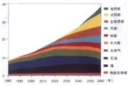
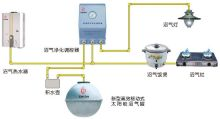
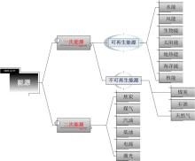
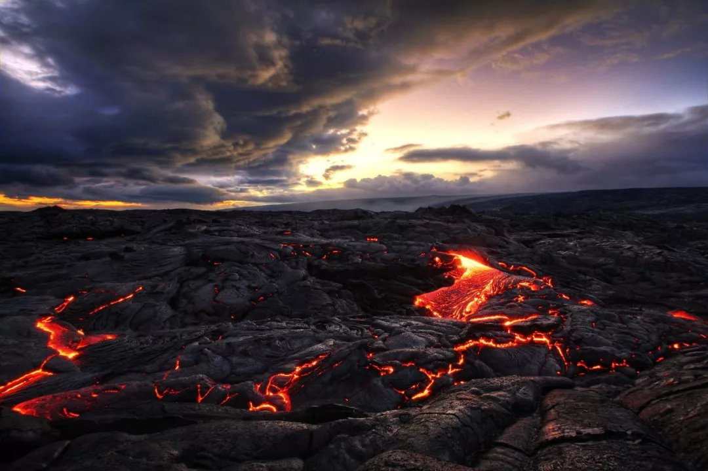
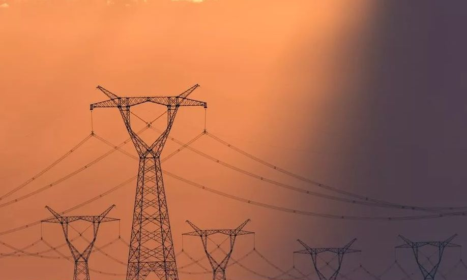
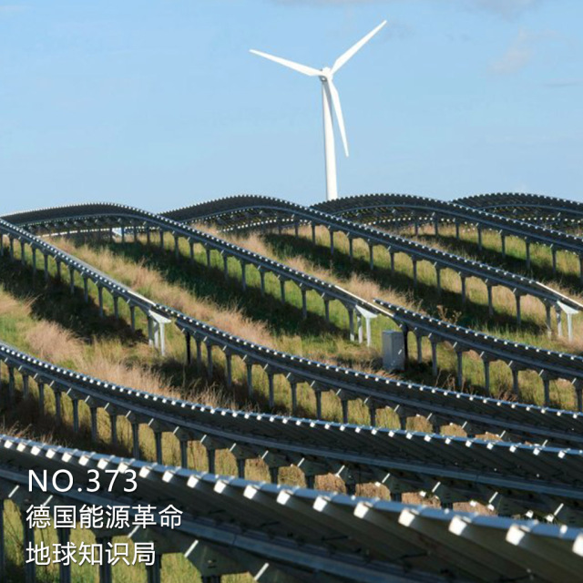
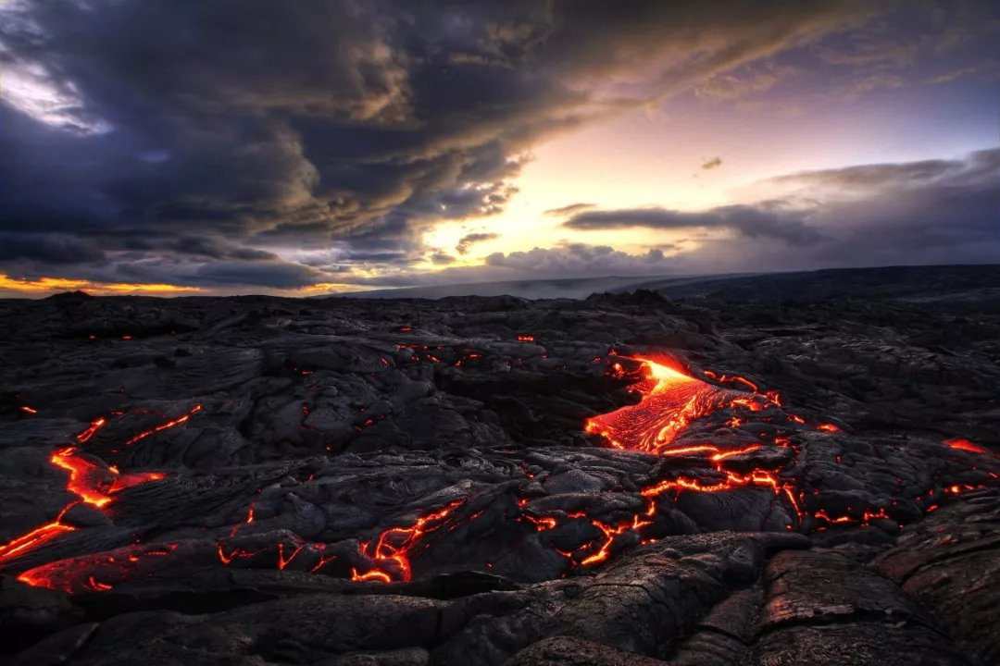

- 中文名
- 能源
- 外文名
- Energy sources
- 属 性
- 提供能量的物质
- 常用能源
- 煤、石油、天然气等
- 分 类
- 不可再生能源、可再生能源
- 主要意思
- 向自然界提供能量转化的物质
能源定义
编辑

能源
物质、能量和信息是构成自然界的基本要素。“能源”这一术语，过去人们谈论得很少，正是两次石油危机使它成了人们议论的热点。
关于能源的定义，约有20种。例如：说：“能源是可从其获得热、光和动力之类能量的资源”；《大英百科全书》说：“能源是一个包括着所有燃料、流水、阳光和风的术语，人类用适当的转换手段便可让它为自己提供所需的能量”；《日本大百科全书》说：“在各种生产活动中，我们利用热能、机械能、光能、电能等来作功，可利用来作为这些能量源泉的自然界中的各种载体，称为能源”；我国的《能源百科全书》说：“能源是可以直接或经转换提供人类所需的光、热、动力等任一形式能量的载能体资源。”可见，能源是一种呈多种形式的，且可以相互转换的能量的源泉。确切而简单地说，能源是自然界中能为人类提供某种形式能量的物质资源。
能源亦称能量资源或能源资源。是指可产生各种能量（如热量、电能、光能和机械能等）或可作功的物质的统称。是指能够直接取得或者通过加工、转换而取得有用能的各种资源，包括煤炭、原油、天然气、煤层气、水能、核能、风能、太阳能、地热能、生物质能等一次能源和电力、热力、成品油等二次能源，以及其他新能源和可再生能源。
能源（Energy Source）亦称能量资源或能源资源，是国民经济的重要物质基础，未来国家命运取决于能源的掌控。能源的开发和有效利用程度以及人均消费量是生产技术和生活水平的重要标志。（中国大百科全书·机械工程卷）
在《中华人民共和国节约能源法》中所称能源，是指煤炭、石油、天然气、生物质能和电力、热力以及其他直接或者通过加工、转换而取得有用能的各种资源。
能源能源产业
编辑能源发展状况
2012年前三季度，受宏观经济下滑影响，高耗能行业增速回落，加之极端不利气候影响较往年减少，全国能源消费增长放缓，能源资源供应充足，能源供需呈现了少有的宽松态势。预计全年电力等主要能源品种消费增长将低于2008、2009年金融危机时期水平，创历史新低。
[2]
能源前景预测
随着宏观经济从2012年第四季度开始出现回暖，且在国内外货币政策趋于宽松、企业补库存等多重因素影响下，未来工业生产将企稳，这将拉动对能源的需求。预计，2013年上半年全国能源需求仍将维持一定的宽松状态，但随着经济企稳基础夯实，特别是城镇化进程加快，从下半年开始，煤炭、电力和油气等主要能源产品消费量将重新快速增长，届时全国能源供需形势仍将回到以往的偏紧状态。
[2]
能源改革提速
2012年以来，中国能源市场化定价改革取得明显进展，调价逐渐走向透明。预计2013年成品油定价新机制将推出、天然气价格改革试点扩大或推向全国、煤电联动有望进一步推进。2012年以来，国家发展和改革委员会多次强调，新成品油定价机制有望“择机出台”。市场人士普遍认为国际油价和国内通胀较低的时候，是新机制出台的良好时机。
此外，煤价并轨良机已经来临。发展改革委已就2013年煤炭产运需衔接定调，核心政策包括三点：首次取消煤炭重点合同；首次放开铁路运力配置；继续完善煤电联动机制。同时，发展改革委牵头起草的《关于取消重点合同 推进电煤价格并轨》的报告已上报国务院。另外，就2013年煤电合同谈判，发展改革委已就《深化煤炭市场化改革 做好煤炭产运需衔接工作指导意见》征求意见。
不过，在电价无法实现市场化的情况下，真正的电煤市场化改革依然步履维艰句号或者，虽然并轨后的全面市场化有利于煤价回归合理水平，也会进一步推动煤电联动的进程，但煤电联动是一个漫长的过程，短期很难实现。
能源分类
编辑能源种类繁多，而且经过人类不断的开发与研究，更多新型能源已经开始能够满足人类需求。根据不同的划分方式，能源也可分为不同的类型。主要有以下八种分法。
能源来源分类

能源分类(9张)
②地球本身蕴藏的能量。通常指与地球内部的热能有关的能源和与原子核反应有关的能源，如原子核能、地热能等。温泉和火山爆发喷出的岩浆就是地热的表现。地球可分为地壳、地幔和地核三层，它是一个大热库。地壳就是地球表面的一层，一般厚度为几公里至70公里不等。地壳下面是地幔，它大部分是熔融状的岩浆，厚度为2900公里。火山爆发一般是这部分岩浆喷出。地球内部为地核，地核中心温度为2000度。可见，地球上的地热资源贮量也很大。
③地球和其他天体相互作用而产生的能量，如潮汐能。
能源产生分类

能源 分类
有一次能源和二次能源。前者即天然能源，指在自然界现成存在的能源，如煤炭、石油、天然气、水能等。后者指由一次能源加工转换而成的能源产品，如电力、煤气、蒸汽及各种石油制品等。一次能源又分为可再生能源（水能、风能及生物质能）和非再生能源（煤炭、石油、天然气等），其中煤炭、石油和天然气三种能源是一次能源的核心，它们成为全球能源的基础；除此以外，太阳能、风能、地热能、海洋能、生物能等可再生能源也被包括在一次能源的范围内；二次能源则是指由一次能源直接或间接转换成其他种类和形式的能量资源，例如：电力、煤气、汽油、柴油、焦炭、洁净煤、激光和沼气等能源都属于二次能源。能源能源性质
有燃料型能源（煤炭、石油、天然气、泥炭、木材）和非燃料型能源（水能、风能、地热能、海洋能）。人类利用自己体力以外的能源是从用火开始的，最早的燃料是木材，以后用各种化石燃料，如煤炭、石油、天然气、泥炭等。
现正研究利用太阳能、地热能、风能、潮汐能等新能源。当前化石燃料消耗量很大，而且地球上这些燃料的储量有限。未来铀和钍将提供世界所需的大部分能量。一旦控制核聚变的技术问题得到解决，人类实际上将获得无尽的能源。
能源污染分类
根据能源消耗后是否造成环境污染可分为污染型能源和清洁型能源，污染型能源包括煤炭、石油等，清洁型能源包括水力、电力、太阳能、风能以及核能等。
能源使用类型
又可分为常规能源和新型能源。
利用技术上成熟，使用比较普遍的能源叫做常规能源。包括一次能源中的可再生的水力资源和不可再生的煤炭、石油、天然气等资源。
新近利用或正在着手开发的能源叫做新型能源。新型能源是相对于常规能源而言的，包括太阳能、风能、地热能、海洋能、生物能、氢能以及用于核能发电的核燃料等能源。由于新能源的能量密度较小，或品位较低，或有间歇性，按已有的技术条件转换利用的经济性尚差，还处于研究、发展阶段，只能因地制宜地开发和利用；但新能源大多数是再生能源。资源丰富，分布广阔，是未来的主要能源之一。
能源形态特征
或转换与应用的层次对它进行分类。世界能源委员会推荐的能源类型分为：固体燃料、液体燃料、气体燃料、水能、电能、太阳能、生物质能、风能、核能、海洋能和地热能。其中，前三个类型统称化石燃料或化石能源。已被人类认识的上述能源，在一定条件下可以转换为人们所需的某种形式的能量。比如薪柴和煤炭，把它们加热到一定温度，它们能和空气中的氧气化合并放出大量的热能。我们可以用热来取暖、做饭或制冷，也可以用热来产生蒸汽，用蒸汽推动汽轮机，使热能变成机械能；也可以用汽轮机带动发电机，使机械能变成电能；如果把电送到工厂、企业、机关、农牧林区和住户，它又可以转换成机械能、光能或热能。
能源商品和非商品
凡进入能源市场作为商品销售的如煤、石油、天然气和电等均为商品能源。国际上的统计数字均限于商品能源。非商品能源主要指薪柴和农作物残余（秸秆等）。1975年，世界上的非商品能源约为0.6太瓦年，相当于6亿吨标准煤。据估计，中国1979年的非商品能源约合2.9亿吨标准煤。
能源再生和非再生
人们对一次能源又进一步加以分类。凡是可以不断得到补充或能在较短周期内再产生的能源称为再生能源，反之称为非再生能源。风能、水能、海洋能、潮汐能、太阳能和生物质能等是可再生能源；煤、石油和天然气等是非再生能源。
地热能基本上是非再生能源，但从地球内部巨大的蕴藏量来看，又具有再生的性质。核能的新发展将使核燃料循环而具有增殖的性质。核聚变的能比核裂变的能可高出5～10倍，核聚变最合适的燃料重氢（氘）又大量地存在于海水中，可谓“取之不尽，用之不竭”。核能是未来能源系统的支柱之一。
能源能源需求
编辑能源中国
改革开放加速了中国工业化进程，能源需求激增，中国能源更多依靠外部“输血”。中国一次能源结构中，煤炭的消费量达68.8%，石油天然气为23.1%，总体上看我们还处在煤炭时代。
1993年中国成为石油净进口国，成为一名晚了近百年的世界石油消费国俱乐部里的“新生”力量。中国海关总署2013年1月10日发布数据显示，2012年中国原油进口量约为2.71亿吨，同比增长6.8%。有专家预判，2013年中国原油进口量将达到2.85亿吨左右，中国原油进口依存度可能突破60%。
此外，2009年起，中国从一个煤炭净出口国变成煤炭净进口国。2012年，中国累计进口煤炭2.9亿吨，进口量达到历史最高水平，居世界第一，超第二名的日本近亿吨。天然气也开始大量进口。
很多人认为应该大力发展核电，理由就是“中国石油对进口依赖度太高”。实际上，只能让中国更依赖另一种必需进口的战略物资——铀。据国际能源署（IEA）的数据，2010年中国铀产量仅为827吨，而2011年中国铀消耗量却达到4400吨。在这种情况下，中国将不可避免地更加依赖铀进口。
张有生向记者表示，中国能源需求已发生重大的变化：由过去的单一品种、主要化石能源依靠进口，转变为多品种的无机物全面依靠进口；由过去的重点是稳定供应，到受价格波动、气候环境等影响，安全趋势将更加严峻；由过去供需双方的利益，演变为多方利益；由过去对抗的能源格局，逐步演变为合作、协同保障，能源内涵进一步扩大。
金融危机促进了全球资源格局重组，使我们有机会挤入原本被西方国家垄断集团把握的卖方阵营，获得优质资源，并在下一个经济周期赢得主动权。譬如，欧债危机仍在深化，不少重债国虽然本地油气资源有限，但意大利、西班牙、葡萄牙的国有石油公司在南美、北非和中亚地区拥有较为丰富的资源储备和产量，还具备较为先进的深海勘探开采技术和下游深加工能力。在危机背景下，原先不可能卖的，可能会卖；原先只肯卖高价的，现可以打折。作为拥有大量外汇储备的中国，应当在这个时候有所作为。
中国正处于走新型工业化的道路上，应积极创优争先，充分利用我国的制度优势和后发优势，各部门要全面进展。在历史的长河中，现代人们对环境的要求越来越高，能源要求的矛盾将越来越突出，相信随着中国经济的发展，能源结构的调整，我国的能源产业将释放更多正能量。
能源英国
作为能源储备巨头，英国是欧盟最大的石油和天然气生产国，石油蕴藏量约10亿～40亿吨，天然气蕴藏量约8600～25850亿立方米。如今，天然气已取代煤炭成为英国的主要能源。除了传统能源，英国也在新能源领域取得了保持着领先优势。低碳经济的概念源自于英国，所以其高度重视可再生能源的开发和应用，而且核电、风能、生物能、太阳能等可再生绿色能源在能源消费结构中的比重不断提升。2012年，可再生能源发电量达到了413亿千瓦时，占全国发电量的11.3%。英国已经形成了多元化的可再生能源利用开发系统，为投资者采用清洁技术开展工业生产活动提供了充分的保障和支持。
值得一提的是，英国的核能源也十分发达。英国核工业有近50年的历史，拥有世界上第一座商用核电站，有对轻水堆和气冷堆核电站的设计、生产、建造和运行支持的全部能力。同时具有铀浓缩、燃料生产（包括MOX燃料）、新燃料及乏燃料运输、后处理、核设施退役及废物处理的完整核燃料循环能力。
英国第一座核电站是建于坎布里亚郡的CalderHall核电站，它是镁诺克斯气冷堆的原型，于1953年兴建，1956年开始向国家电网送电，是世界上第一座商用核电站。此后，英国又相继建成10座这样的镁诺克斯核电站。这批电站中有6座还在运行，其余5座已经关闭或正在退役。英国共有14个商业运行核电站。三种堆型（Magnox堆、AGR、PWR），31个堆在运行，平均负荷因子为64.5%，总装机容量为12.48GW（其中Magnox堆2916MW，AGR堆8380MW，PWR堆1188MW），核电占全国总电力的25%。核电在英国的气候变化目标中起很大作用。据统计，英国核电能减少全国7%～14%的二氧化碳的排放。
能源俄罗斯
到20世纪90年代中期，俄罗斯已经探明可开采石油量约为80亿吨，占世界的近13%，石油年产量达到3亿多吨，占据世界第二。而俄罗斯天然气探明储量约49万亿M，占世界的35.4%，天然气年产量居世界第一。
但俄罗斯年人均能源消耗为6.3吨固体燃料。如果将其全部转化为优质煤产生的热能来计算，相当于7000大卡/公斤，多于欧洲人均4.7吨水平。世界人均水平为3.3吨。如果按国民能源拥有量来看，俄罗斯人均是美国和英国的2.5倍。虽然由于气候等原因，这个数字可能有些偏差，但从另一个角度却反映了俄罗斯经济水平不高。所以俄罗斯的能源产业并不发达。
能源德国
德国在20世纪70年代经历了1974年的石油危机之后决定大力发展核电，当时国家对能源十分敏感，但是1986年切尔诺贝利核事故发生之后，该项政策有所变动，最后一座反应堆在1989年获批。无论1979年的民主党（SPD）如何支持发展核电，1986年8月政府宣布在未来的十年中放弃发展核电。
该项政策一经发布，R&D实验室研究30多年的高温气冷堆和快中子堆项目被迫终止，但是由于当时的大部分研究工作在民主党控制NorthRhine—Westphlia，CDUl联邦政府之后继续支持国内现存的核反应堆和研究项目，一直坚持到了1998年被打败为止。
最新消息，德国环境部长宣布，大部分核电站将在2021年前关闭，为了应对可能的电力短缺，另3座相对较新的核电站则推迟到2022年关闭。
能源法国
法国能源相对贫瘠，石油和天然气蕴藏量有限，而煤炭资源早在20世纪50年代便逐渐枯竭。但是，通过对核能和可再生能源的充分利用，法国走出了一条多元化的能源供应道路，使国内能源不足的压力得到有效缓解。
法国应对能源不足的主要手段之一是大力发展核能。上世纪两次石油危机后，法国政府下决心推广核能。1958年，法国就从美国西屋公司购买了压水核反应堆技术专利。
1956年，法国第一台40兆瓦可用于发电的反应堆G1在马尔库尔投产。其他两台反应堆——G2和G3也先后于1959年和1960年投入运行。在此基础上，原委会开发了天然铀石墨气冷反应堆技术，并将其确定为法国早期核电站建设的技术路线。
20世纪70年代初石油危机爆发后，法国决定大规模发展核电，在美国压水堆技术基础上，制订了一项目标宏大的标准化核电发展规划。
能源消费预测
编辑据IEA发布的《世界能源展望2008》预测，从2006年至2030年世界一次能源需求从117.3亿吨油当量增长到了170.1多亿吨油当量，增长了45%，平均每年增长1.6%。全球能源需求的增长率比《世界能源展望2007》预测的要低一些，主要是由于全球能源价格上涨和经济增长放缓（特别是OECD国家）。到2030年化石燃料占世界一次能源构成的80%。虽然从绝对值上来看，煤炭需求的增长超过任何其它燃料，但石油仍是最主要的燃料。据估计，2006年城市的能源消耗达79亿吨油当量，占全球能源总消耗量的三分之二，这一比例将会在2030年上升至四分之三。
由于中国和印度的经济持续强劲增长，在2006年至2030年期间，其一次能源需求的增长将占世界一次能源总需求增长量的一半以上。中东国家占全球增长量的11%，增强了其作为一个重要的能源需求中心的地位。总的来说，非经合组织（Non-OECD）国家占总增长量的87%。因此，它们占世界一次能源需求比例从51%上升至62%，它们的能源消费量超过经合组织（OECD）成员国2005年的消费量。
全球石油需求（生物燃料除外）平均每年上升1%，从2007年8500万桶/日增加到2030年1.06亿桶/日。然而，其占世界能源消费的份额从34%下降到30%。所有预测中世界石油需求的增长都主要源于非经合组织（Non-OECD）国家（4/5以上的增长量来自中国、印度和中东地区），经合组织（OECD）成员国石油需求略有下降，主要是因为非运输行业石油需求的减少。全球天然气需求的增长更加迅速，以1.8%的速度递增，在能源需求总额中所占比例微略上升至22%。天然气消费量的增长大部分来自发电行业。世界煤炭需求量平均每年增长2%，其在全球能源需求量中的份额从2006年的26%攀升至2030年的29%。其中，全球煤炭消费增加的85%，主要来自中国和印度的电力行业。
在《展望》预测期内，核电在一次能源需求中所占比例略有下降，从6%下降到2030年的5%（其发电量比例从15%下降到10%），这与我们不期待在此情景中政府改变其政策的惯例是一致的，虽然最近对核电的兴趣有了复苏的迹象。尽管如此，除经合组织欧洲区外，世界主要地区的核发电量将在绝对值上有所增长。
现代可再生能源技术发展极为迅速，将于2010年后不久超过天然气，成为仅次于煤炭的第二大电力燃料。可再生能源的成本随着技术的成熟应用而降低，假设化石燃料的价格上涨以及有力的政策支持为可再生能源行业提供了一个机会，使其摆脱依赖于补贴的局面，并推动新兴技术进入主流。在本期预测中，风能、太阳能、地热能、潮汐和海浪能等非水电可再生能源（生物质能除外）的增长速度为7.2%，超过任何其它能源的全球年均增长速度。电力行业对可再生能源的利用占大部分的增长。非水电可再生能源在总发电量所占比例从2006年的1%增长到2030年的4%。尽管水电产量增加，但其电力的份额下降两个百分点至14%。经合组织（OECD）国家可再生能源发电的增长量超过化石燃料和核发电量增长的总和。
能源中国能源
编辑 能源
能源
中国是世界上第一大能源生产国和消费国。能源供应持续增长，为经济社会发展提供了重要的支撑。能源消费的快速增长，为世界能源市场创造了广阔的发展空间。中国已经成为世界能源市场不可或缺的重要组成部分，对维护全球能源安全，正在发挥着越来越重要的积极作用。中国政府正在以科学发展观为指导，加快发展现代能源产业，坚持节约资源和保护环境的基本国策，把建设资源节约型、环境友好型社会放在工业化、现代化发展战略的突出位置，努力增强可持续发展能力，建设创新型国家，继续为世界经济发展和繁荣作出更大贡献。
能源发展情况
第一，中国已成为世界重要的能源生产大国。2011年，中国一次能源生产总量达到31.8亿吨标准煤，居世界第一，其中，原煤产量35.2亿吨，原油2.03亿吨，天然气1027亿立方米，分别居世界第一、第五和第六。电力装机容量已突破11亿千瓦。能源自给率始终保持在90%左右，中国主要依靠自己的力量，保障了13亿人口的能源需求。
[3]
第二，节约能源、提高能效有明显进步。过去的6年，中国单位国内生产总值能源消耗累计下降21%，相当于减排二氧化碳15.3亿吨。在电力、钢铁、水泥、化工等高耗能行业，加快技术进步，淘汰落后产能，推动产业升级和节能减排。中国30万千瓦及以上火电机组比重达到70%以上，火电每千瓦时发电标准煤耗下降到308克，达到世界发达国家水平。
[3]
第三，可再生能源和新能源发展迅速。中国水电装机已超过2.5亿千瓦，居世界第一。核电投运机组15台，装机规模1250万千瓦；在建核电机组26台，在建规模居世界第一。风电并网装机超过5500万千瓦，成为世界风电大国。太阳能发电增长强劲，装机容量将突破700万千瓦。
[3]
第四，能源科技装备水平不断提高。建成了完善的油气勘探开发技术体系，复杂区块勘探开发、提高油气田采收率等技术处于国际领先地位，具备千万吨炼油和百万吨乙烯装置设计和制造能力。采煤机械化程度达到60%以上，井下600万吨综采成套装备全面推广。百万千瓦超超临界燃煤机组、80万千瓦水轮机组实现自主设计和制造。风电和太阳能光伏发电形成了完整的研发和制造产业链。
[3]
第五，能源普遍服务水平明显提高。2011年，中国人均一次能源消费量达到2.6吨标准煤，人均用电量达到3500千瓦时。过去10年，我们通过加强农村地区电网改造，提高了农村居民用电可靠性，同时还解决了3500多万无电人口的用电问题。
[3]
能源发展现状
能源资源是能源发展的基础。新中国成立以来，不断加大能源资源勘查力度，组织开展了多次资源评价。中国能源资源有以下特点：
—能源资源总量比较丰富。中国拥有较为丰富的化石能源资源。其中，煤炭占主导地位。2006年，煤炭保有资源量10345亿吨，剩余探明可采储量约占世界的13%，列世界第三位。已探明的石油、天然气资源储量相对不足，油页岩、煤层气等非常规化石能源储量潜力较大。中国拥有较为丰富的可再生能源资源。水力资源理论蕴藏量折合年发电量为6.19万亿千瓦时，经济可开发年发电量约1.76万亿千瓦时，相当于世界水力资源量的12%，列世界首位。

—人均能源资源拥有量较低。中国人口众多，人均能源资源拥有量在世界上处于较低水平。煤炭和水力资源人均拥有量相当于世界平均水平的50%，石油、天然气人均资源量仅为世界平均水平的1/15左右。耕地资源不足世界人均水平的30%，制约了生物质能源的开发。
—能源资源赋存分布不均衡。中国能源资源分布广泛但不均衡。煤炭资源主要赋存在华北、西北地区，水力资源主要分布在西南地区，石油、天然气资源主要赋存在东、中、西部地区和海域。中国主要的能源消费地区集中在东南沿海经济发达地区，资源赋存与能源消费地域存在明显差别。大规模、长距离的北煤南运、北油南运、西气东输、西电东送，是中国能源流向的显著特征和能源运输的基本格局。

能源可持续发展
必须寻找一些既能保证有长期足够的供应量又不会造成环境污染的能源。
而人类面临的问题正是：能源资源枯竭；环境污染严重。
随着我国城镇化进程的不断推进，能源需求持续增长，能源供需矛盾也越来越突出，迫在眉睫的问题是，中国究竟该寻求一条怎样的能源可持续发展之路？业内官员和学者认为，为了实现能源的可持续发展，中国一方面必须“开源”，即开发核电、风电等新能源和可再生能源，另一方面还要“节流”，即调整能源结构，大力实施节能减排。
开发新能源和可再生能源是能源可持续发展的应有之义。在我国的能源供应结构里，煤炭、石油与天然气等不可再生能源占绝大部分，新能源和可再生能源开发不足，这不仅造成环境污染等一系列问题，也严重制约能源发展，必须下大力气加快发展新能源和可再生能源，优化能源结构，增强能源供给能力，缓解压力。
我国的核电装机容量不到发电装机容量的2%，远低于世界17%的平均水平，应当采取有效的措施，解决技术路线、投资体制、燃料保障等问题，使我国核电发展的步子迈得更大一些。同时，我国的风电资源量在10亿千瓦左右，仅开发几百万千瓦，应当对风电发展进行正确引导，促进用电健康可持续发展。
走能源可持续发展之路，从大的能源结构来讲，还是要加快发展核电。最近一两年，从中央到国务院，都坚定了加快发展核电的信心，核电的工作力度也在加大。在今后一个时期，在优化能源结构方面，核电的比重、速度要保持相对快速的增长，规模要在短期内有比较大的提升。不光是沿海，还要逐步向中部地区发展。
节能减排是能源可持续发展的必由之路。侯云春表示，我国能源需求结构不合理突出表现为能源利用消耗高、浪费大、污染严重，缓解能源供需矛盾问题，从根本上就是大力节约和合理使用，提高其利用效率，严格控制钢铁、有色、化工、电力等高耗能产业发展，进一步淘汰落后的生产能力。同时，还要大力发展循环经济、积极开展清洁生产，全面推进管理节能，大力推广节能市场机制，促进节能发展，广泛开展全民节能活动。
能源发展成果
改革开放以来，中国能源工业迅速发展，为保障国民经济持续快速发展作出了重要贡献，主要表现：
—供给能力明显提高。经过几十年的努力，中国已经初步形成了煤炭为主体、电力为中心、石油天然气和可再生能源全面发展的能源供应格局，基本建立了较为完善的能源供应体系。建成了一批千万吨级的特大型煤矿。2006年一次能源生产总量22.1亿吨标准煤，列世界第二位。其中，原煤产量23.7亿吨，列世界第一位。先后建成了大庆、胜利、辽河、塔里木等若干个大型石油生产基地，2006年原油产量1.85亿吨，实现稳步增长，列世界第五位。天然气产量迅速提高，从1980年的143亿立方米提高到2006年的586亿立方米。商品化可再生能源量在一次能源结构中的比例逐步提高。电力发展迅速，装机容量和发电量分别达到6.22亿千瓦和2.87万亿千瓦时，均列世界第二位。能源综合运输体系发展较快，运输能力显著增强，建设了西煤东运铁路专线及港口码头，形成了北油南运管网，建成了西气东输大干线，实现了西电东送和区域电网互联。
—能源节约效果显著。1980—2006年，中国能源消费以年均5.6%的增长支撑了国民经济年均9.8%的增长。按2005年不变价格，万元国内生产总值能源消耗由1980年的3.39吨标准煤下降到2006年的1.21吨标准煤，年均节能率3.9%，扭转了近年来单位国内生产总值能源消耗上升的势头。能源加工、转换、贮运和终端利用综合效率为33%，比1980年提高了8个百分点。单位产品能耗明显下降，其中钢、水泥、大型合成氨等产品的综合能耗及供电煤耗与国际先进水平的差距不断缩小。
—科技水平迅速提高。中国能源科技取得显著成就，以“陆相成油理论与应用”为标志的基础研究成果，极大地促进了石油地质科技理论的发展。石油天然气工业已经形成了比较完整的勘探开发技术体系，特别是复杂区块勘探开发、提高油田采收率等技术在国际上处于领先地位。煤炭工业建成一批具有国际先进水平的大型矿井，重点煤矿采煤综合机械化程度显著提高。在电力工业方面，先进发电技术和大容量高参数机组得到普遍应用，水电站设计、工程技术和设备制造等技术达到世界先进水平，核电初步具备百万千瓦级压水堆自主设计和工程建设能力，高温气冷堆、快中子增殖堆技术研发取得重大突破。烟气脱硫等污染治理、可再生能源开发利用技术迅速提高。正负500千伏直流和750千伏交流输电示范工程相继建成投运，正负800千伏直流、1000千伏交流特高压输电试验示范工程开始启动。
—环境保护取得进展。中国政府高度重视环境保护，加强环境保护已经成为基本国策，社会各界的环保意识普遍提高。1992年联合国环境与发展大会后，中国组织制定了《中国21世纪议程》，并综合运用法律、经济等手段全面加强环境保护，取得了积极进展。中国的能源政策也把减少和有效治理能源开发利用过程中引起的环境破坏、环境污染作为其主要内容。2006年，燃煤机组除尘设施安装率和废水排放达标率达到近100%，烟尘排放总量与1980年基本相当，单位电量烟尘排放减少了90%。2006年，全国建成并投入运行的脱硫火电机组装机容量达1.04亿千瓦，超过前10年的总和，装备脱硫设施的火电机组占火电总装机的比例由2000年的2%提高到30%。
—市场环境逐步完善。中国能源市场环境逐步完善，能源工业改革稳步推进。能源企业重组取得突破，现代企业制度基本建立。投资主体实现多元化，能源投资快速增长，市场规模不断扩大。煤炭工业生产和流通基本实现了市场化。电力工业实现了政企分开、厂网分开，建立了监管机构。石油天然气工业基本实现了上下游、内外贸一体化。能源价格改革不断深化，价格机制不断完善。
随着中国经济的较快发展和工业化、城镇化进程的加快，能源需求不断增长，构建稳定、经济、清洁、安全的能源供应体系面临着重大挑战，突出表现：
—资源约束突出，能源效率偏低。中国优质能源资源相对不足，制约了供应能力的提高；能源资源分布不均，也增加了持续稳定供应的难度；经济增长方式粗放、能源结构不合理、能源技术装备水平低和管理水平相对落后，导致单位国内生产总值能耗和主要耗能产品能耗高于主要能源消费国家平均水平，进一步加剧了能源供需矛盾。单纯依靠增加能源供应，难以满足持续增长的消费需求。
—能源消费以煤为主，环境压力加大。煤炭是中国的主要能源，以煤为主的能源结构在未来相当长时期内难以改变。相对落后的煤炭生产方式和消费方式，加大了环境保护的压力。煤炭消费是造成煤烟型大气污染的主要原因，也是温室气体排放的主要来源。随着中国机动车保有量的迅速增加，部分城市大气污染已经变成煤烟与机动车尾气混合型。这种状况持续下去，将给生态环境带来更大的压力。
—市场体系不完善，应急能力有待加强。中国能源市场体系有待完善，能源价格机制未能完全反映资源稀缺程度、供求关系和环境成本。能源资源勘探开发秩序有待进一步规范，能源监管体制尚待健全。煤矿生产安全欠账比较多，电网结构不够合理，石油储备能力不足，有效应对能源供应中断和重大突发事件的预警应急体系有待进一步完善和加强。
青藏高原发现新能源可燃冰 至少350亿吨油当量
2009年9月25日在北京介绍，中国地质部门在青藏高原发现了一种名为可燃冰（又称天然气水合物）的环保新能源，预计十年左右能投入使用。
在当天的新闻发布会上，张洪涛说，这是中国首次在陆域上发现可燃冰，使中国成为加拿大、美国之后，在陆域上通过国家计划钻探发现可燃冰的第三个国家。他介绍，初略的估算，远景资源量至少有350亿吨油当量。
可燃冰是水和天然气在高压、低温条件下混合而成的一种固态物质，具有使用方便、燃烧值高、清洁无污染等特点，是公认的地球上尚未开发的最大新型能源。
国务院新闻办公室2012年10月24日发表《中国的能源政策（2012）》白皮书。其中包含我国能源发展现状、政策和目标、全面推进能源节约、大力发展新能源和可再生能源、推动化石能源清洁发展、提高能源普遍服务水平、加快推进能源科技进步、深化能源体制改革、加强能源国际合作几个方面。规划指出，中国将坚定不移地大力发展新能源和可再生能源，到“十二五”末，非化石能源消费占一次能源消费比重将达到11.4%，非化石能源发电装机比重达到30%。
能源启示建议
1．依靠科技进步和政策引导，提高能源效率，走高效、清洁化的能源利用道路。中国有自己的国情，中国能源资源储量结构的特点及中国经济结构的特色，决定在可预见的未来，我国以煤炭为主的能源结构将不大可能改变，我国能源消费结构与世界能源消费结构的差异将继续存在，这就要求中国的能源政策，包括在能源基础设施建设、能源勘探生产、能源利用、环境污染控制和利用海外能源等方面的政策应有别于其他国家。鉴于我国人口多、能源资源特别是优质能源资源有限，以及正处于工业化进程中等情况，应特别注意依靠科技进步和政策引导，提高能源效率，寻求能源的清洁化利用，积极倡导能源、环境和经济的可持续发展。
2．积极借鉴国际先进经验，建立和完善我国能源安全体系。为保障能源安全，我国一方面应借鉴国际先进经验，完善能源法律法规，建立能源市场信息统计体系，建立我国能源安全的预警机制、能源储备机制和能源危机应急机制，积极倡导能源供应在来源、品种、贸易、运输等方式的多元化，提高市场化程度；另一方面应加强与主要能源生产国和消费国的对话，扩大能源供应网络，实现能源生产、运输、采购、贸易及利用的全球化。
能源能源建设
●2003年，国务院作出关于加快大型煤炭基地建设，形成若干个亿吨级煤炭骨干企业的重大决策。
●2005年2月，国务院成立煤矿瓦斯防治部际协调领导小组，统筹协调解决煤矿瓦斯防治的重大问题。2005年以来小组会议每年召开一次。
●2007年11月，国家发改委发布《煤炭产业政策》，从产业布局、市场准入、产业技术、企业组织等方面明确了鼓励性、限制性和禁止性政策。
●2007年12月，我国发电装机迈上7亿千瓦新台阶。2002年至2007年五年间，我国新增发电装机规模约3.5亿千瓦，相当于新中国成立至2002年50多年的总和，也相当于英国、法国、意大利三个发达国家电力装机的总和。
●2008年底国家石油储备一期项目全部建成，并储满原油，我国石油安全有了初步保障。按照国务院批准的《国家石油储备中长期规划（2008—2020年）》，国家石油储备二期于2009年初启动，项目建设已全面展开，其中独山子、兰州项目已建成投用。
●2009年8月1日，我国开始实行四级风力发电标杆上网电价，按照风力资源优劣，划分出四个区域，并划定相应标杆上网电价。风电标杆电价的实施，有力推动了我国风电产业的市场化进程。
●2010年12月19日，中国海油国内油气年产量首次超过5000万吨，成功建成“海上大庆油田”，我国由此跨入海洋油气生产大国行列。
●2010年底，中国风电装机总量达到4182.7万千瓦，首次超越美国成为风电装机世界第一大国。
●2011年3月17日，国民经济和社会发展“十二五”规划纲要公布，提出优化能源结构，合理控制能源消费总量，完善资源性产品价格形成机制和资源环境税费制度，改变了过去敞开口子供应能源的发展思路。
●2011年12月22日，中国石油海外油气作业年产量突破1亿吨、权益产量达到5000万吨，“海外大庆”高水平、高质量建成。
●2012年5月，国家能源局会同财政部等部门出台《页岩气发展规划（2011—2015）》，大力推动页岩气勘探开发，以增加我国天然气资源供应。
能源能源形势
作为世界上最大的发展中国家，中国是一个能源生产和消费大国。能源生产量仅次于美国和俄罗斯，居世界第三位；基本能源消费占世界总消费量的1/10，仅次于美国，居世界第二位。中国又是一个以煤炭为主要能源的国家，发展经济与环境污染的矛盾比较突出。近年来能源安全问题也日益成为国家生活乃至全社会关注的焦点，日益成为中国战略安全的隐患和制约经济社会可持续发展的瓶颈。20世纪90年代以来，中国经济的持续高速发展带动了能源消费量的急剧上升。自1993年起，中国由能源净出口国变成净进口国，能源总消费已大于总供给，能源需求的对外依存度迅速增大。煤炭、电力、石油和天然气等能源在中国都存在缺口，其中，石油需求量的大增以及由其引起的结构性矛盾日益成为中国能源安全所面临的最大难题。
能源石油市场
编辑1、世界石油价格
世界石油价格定义为石油精炼企业的年平均进口原油收购成本。本文描述了三种不同的油价。基准情景代表了当前对OPEC可能行为的判断，OPEC可以通过调整产量使世界石油价格维持在22～28美元/桶范围内。据估计，OPEC将是中期国际石油市场的主要供应者，因此它的产量决策将对世界油价有很大影响。世界低油价情景代表未来市场石油生产竞争激烈并且供应充足。高油价情景代表OPEC出于非经济原因，制定较低的石油产量目标，内部团结且能够形成市场垄断。
2、世界石油供应
据预测，2025年的世界石油供应将比2001年增加4400万桶/天。产量的增加不仅来自OPEC国家，也来自非OPEC产油国。然而，总增加量中可能只有40%来自非OPEC国家。在过去20年中，非OPEC产油国的石油产量增加导致OPEC的市场占有率远远低于其历史最高市场份额1973年的52%。新的勘探和开采技术、工业成本降低、政府对厂商的财税优惠政策都有利于非OPEC产油国石油生产量的继续增加。未来20年中石油需求增加量中的60%将由OPEC成员国产量的增加来完成，而不是依靠非OPEC产油国。预计在2025年OPEC石油产量比其在2001年的产量高出2500万桶/天。预计OPEC组织2010年的生产能力比前期预测的略少。一些分析家提出OPEC可能通过保留生产能力扩张的策略来追求价格继续攀升。
3、储量与资源量
石油资源基准可以分为三类：已探明储量（已探明但未开采的石油），储藏增长值（主要由于技术因素增加了油气的回收率，导致储量的增加），未发现储量（有待通过勘探发现的资源）。美国、前苏联、中南美洲以及非洲的储量增长较快，而前苏联和中南美洲的未发现储量较大。
4、世界其他机构预测的价格
数家分析机构对石油价格进行了预测，预测结果的差别较大。原油价格在未来的20年中，价格基本维持在20～25美元/桶的水平。
能源能量转化
编辑 能源 转化
能源 转化
能源未来替代
编辑能源生物能源
生物能源（又名生物质能）是利用有机物质（例如植物等）作为燃料，通过气体收集、气化（化固体为气体）、燃烧和消化作用（只限湿润废物）等技术产生能源。只要适当地执行，生物质能也是一种宝贵的可再生能源，但要看生物质能燃料是如何产生出来。
全球范围正在炒做用玉米、小麦、食糖等粮食来制造汽油等能源来满足日益增长的需求，以及过高价格带来的过高成本。
为人类的生产和生活提供各种能力和动力的物质资源，是国民经济的重要物质基础。
能源新能源
氢能、风能、太阳能、海洋能、生物质能和核聚变能，新能源的方式，只是能量利用多步骤中前移的一环。而被忽视，潜力巨大的发动机或做功原理、观念的革新更是未来能源开发的第一大方向！
能量利用效率不高，浪费惊人。经典的热机做功方式，能量做功的有用效率只有25%（1/4），最高也就1/3（33.3%）。而100%能量中的75%（3/4）、或66.67%（2/3）都作为无用的热浪费掉了。另有意外，“班克斯热机”是利用记忆合金制成的不要燃料，不耗电力的高效发动机。
热机做功的原理是燃料产热=微观粒子的无序运动。这个热运动，平均说三维空间上每个方向的能量各占1/3，而热机做有用功的也就三维方向中的一个方向维度。其他二维方向上的能量只好作为废热浪费掉！
“绝热”显然已经不是提高热机效率的好创意。原因何在？源自“新热力学发动机原理”！“无热发动机”。当热已经产生，无序运动已经出笼，魔兽就控制不住了！引擎的效率被这1/3或1/4极限桎梏住了。陶瓷“绝热”只是没有诊断对的“错方”，用错药就是必然。
当旧能源（包括新能源）没有产热，新引擎100%做功才会成为可能！也就是旧、新能源微观做有序的一维的运动，发动机的效率才能回归100%，浪费的2/3或3/4能源才可引尔能发，不向或少向环境排泄废热，污染环境，节约大自然的资源！
能源危机
根据经济学家和科学家的普遍估计，到21世纪中叶，也即2050年左右，石油资源将会开采殆尽，其价格升到很高，不适于大众化普及应用的时候，如果新的能源体系尚未建立，能源危机将席卷全球，尤以欧美极大依赖于石油资源的发达国家受害为重。最严重的状态，莫过于工业大幅度萎缩，或甚至因为抢占剩余的石油资源而引发战争。
为了避免上述窘境，美国、加拿大、日本、欧盟等都在积极开发如太阳能、风能、海洋能（包括潮汐能和波浪能）等可再生新能源，或者将注意力转向海底可燃冰（水合天然气）等新的化石能源。同时，氢气、甲醇等燃料作为汽油、柴油的替代品，也受到了广泛关注。国内外热情研究的氢燃料电池电动汽车，就是此类能源中介应用的典型代表。
能源是整个世界发展和经济增长的最基本的驱动力，是人类赖以生存的基础。自工业革命以来，能源安全问题就开始出现。1913年，英国海军开始用石油取代煤炭作为动力时，时任海军上将的邱吉尔就提出了“绝不能仅仅依赖一种石油、一种工艺、一个国家和一个油田”这一迄今仍未过时的能源多样化原则。伴随着人类社会对能源需求的增加，能源安全逐渐与政治、经济安全紧密联系在一起。两次世界大战中，能源跃升为影响战争结局、决定国家命运的重要因素。法国总理克莱蒙梭曾说，“一滴石油相当于我们战士的一滴鲜血”。可见，能源安全的重要性在那时便已得到国际社会普遍认可。
20世纪70年代爆发的两次石油危机使能源安全的内涵得到极大拓展，特别是1974年成立的国际能源署正式提出了以稳定石油供应和价格为中心的能源安全概念，西方国家也据此制定了以能源供应安全为核心的能源政策。在此后的二十多年里，在稳定能源供应的支持下，世界经济规模取得了较大增长。但是，人类在享受能源带来的经济发展、科技进步等利益的同时，也遇到一系列无法避免的能源安全挑战，能源短缺、资源争夺以及过度使用能源造成的环境污染等问题威胁着人类的生存与发展。
世界上常规能源的储量有的只能维持半个世纪（如石油），最多的也能维持一两个世纪（如煤）人类生存的需求。
世界人口已经突破60亿，比上个世纪末期增加了2倍多，而能源消费据统计却增加了16倍多。无论多少人谈论“节约”和“利用太阳能”或“打更多的油井或气井”或者“发现更多更大的煤田”，能源的供应却始终跟不上人类对能源的需求。当前世界能源消费以化石资源为主，其中中国等少数国家是以煤炭为主，其它国家大部分则是以石油与天然气为主。按消耗量，专家预测石油、天然气最多只能维持不到半个世纪，煤炭也只能维持一、两个世纪。所以不管是哪一种常规能源结构，人类面临的能源危机都日趋严重。
当前世界所面临的能源安全问题呈现出与历次石油危机明显不同的新特点和新变化，它不仅仅是能源供应安全问题，而是包括能源供应、能源需求、能源价格、能源运输、能源使用等安全问题在内的综合性风险与威胁。
就可预见的未来来看，汽车不会大量减少的，但是石油危机的确会对汽车业有一定的影响，比如开发新型汽车（像混合动力、燃料电池、氢动力、太阳能等）以减轻对石油的依赖，减少一些不必要的汽车使用（主要是指私家车）以节约燃料等，但是总的来看不用担心汽车减少这个问题。
能源趋势
编辑部分可再生能源利用技术已经取得了长足的发展，并在世界各地形成了一定的规模。生物质能、太阳能、风能以及水力发电、地热能等的利用技术已经得到了应用。
国际能源署（IEA）对2000～2030年国际电力的需求进行了研究，研究表明，来自可再生能源的发电总量年平均增长速度将最快。IEA的研究认为，在未来30年内非水利的可再生能源发电将比其他任何燃料的发电都要增长得快，年增长速度近6%在2000～2030年间其总发电量将增加5倍，到2030年，它将提供世界总电力的4.4%，其中生物质能将占其中的80%。
可再生能源在一次能源中的比例总体上偏低，一方面是与不同国家的重视程度与政策有关，另一方面与可再生能源技术的成本偏高有关，尤其是技术含量较高的太阳能、生物质能、风能等据IEA的预测研究，在未来30年可再生能源发电的成本将大幅度下降，从而增加它的竞争力。可再生能源利用的成本与多种因素有关，因而成本预测的结果具有一定的不确定性。但这些预测结果表明了可再生能源利用技术成本将呈不断下降的趋势。
中国政府高度重视可再生能源的研究与开发。国家经贸委制定了新能源和可再生能源产业发展的“十五”规划，并制定颁布了《中华人民共和国可再生能源法》，重点发展太阳能光热利用、风力发电、生物质能高效利用和地热能的利用。近年来在国家的大力扶持下，我国在风力发电、海洋能潮汐发电以及太阳能利用等领域已经取得了很大的进展。
新能源（或称可再生能源更贴切）主要有：太阳能、风能、地热能、生物质能等。生物质能在经过了几十年的探索后，国内外许多专家都表示这种能源方式不能大力发展，它不但会抢夺人类赖以生存的土地资源，更将会导致社会不健康发展；地热能的开发和空调的使用具有同样特性，如大规模开发必将导致区域地面表层土壤环境遭到破坏，必将引起再一次生态环境变化；而风能和太阳能对于地球来讲是取之不尽、用之不竭的健康能源，他们必将成为今后替代能源主流。
太阳能发电具有布置简便以及维护方便等特点，应用面较广，全球装机总容量已经开始追赶传统风力发电，在德国甚至接近全国发电总量的5%～8%，随之而来的问题令我们意想不到，太阳能发电的时间局限性导致了对电网的冲击，如何解决这一问题成为能源界的一大困惑。
风力发电在19世纪末就开始登上历史的舞台，在一百多年的发展中，一直是新能源领域的独孤求败，由于它造价相对低廉，成了各个国家争相发展的新能源首选，然而，随着大型风电场的不断增多，占用的土地也日益扩大，产生的社会矛盾日益突出，如何解决这一难题，成了我们又一困惑。
早在2001年，MUCE就为了开拓稳定的海岛通信电源而开展一项研究，经过六年多研究和实践，终于将一种成熟的新型应用方式MUCE风光互补系统向社会推广，这种系统采用了我国自主研制的新型垂直轴风力发电机（H型）和太阳能发电进行10：3地结合，形成了相对稳定的电力输出。在建筑上、野外、通信基站、路灯、海岛均进行了实际应用，获得了大量可靠的使用数据。这一系统的研究成果将为我国乃至世界的新能源发展带来了新的动力。
新型垂直轴风力发电机（H型）突破了传统的水平轴风力发电机启动风速高、噪音大、抗风能力差、受风向影响等缺点，采取了完全不同的设计理论，采用了新型结构和材料，达到微风启动、无噪音、抗12级以上台风、不受风向影响等性能，可大量用于别墅、多层及高层建筑、路灯等中小型应用场合。以它为主建立的风光互补发电系统，具有电力输出稳定、经济性高、对环境影响小等优点，也解决了太阳能发展中对电网冲击等影响。
随着能源危机日益临近，新能源已经成为今后世界上的主要能源之一。其中太阳能已经逐渐走入我们寻常的生活，风力发电偶尔可以看到或听到，可是它们作为新能源如何在实际中去应用？新能源的发展究竟会是怎样的格局？这些问题将是我们在今后很长时间里需要探索的。
词条图册
更多图册
-
-


岩石也能发电吗：干热岩
2018-03-20577 -
油都还能迎来新的春天吗？
2018-03-28469 -

14亿人全民通电，发电量增速领跑全球，中国是如何做到的？
每当夏天人们打开空调电扇，每当城市在黑夜中灯火通明，我便不由得想起，千里之外发电机隆隆的轰鸣，因为那就是这个跑步进入现代化的国家中，最波澜壮阔的声音。
2019-07-04250 -

德国为什么离不开煤炭？地球知识局
德国能源改革进入深水区，但是效果却越来越差，主要原因还是德国煤炭资源丰富而新能源技术又不靠谱。面对民众的环保呼声和产业界的反对，德国能源转型路在何方？
2017-12-22137
-

- 参考资料
-
- 1. 何盛明． 财经大辞典： 中国财政经济出版社， 1990
- 2. 能源所预计明年能源供需形势偏紧，对能源产业影响分析 ．产业焦点研究[引用日期2012-12-24]
- 3. 中国能源发展情况五个特点 ．中国城市低碳经济网[引用日期2012-12-11]
- 4. 中国陆上油田分布、地图和名录 ．中华石油全图、配套项目名录和报告[引用日期2013-03-04]
- 5. 中国的陆上气田地图、项目名录和报告 ．中华天然气全图、配套项目名录和报告[引用日期2013-03-01]
.png)